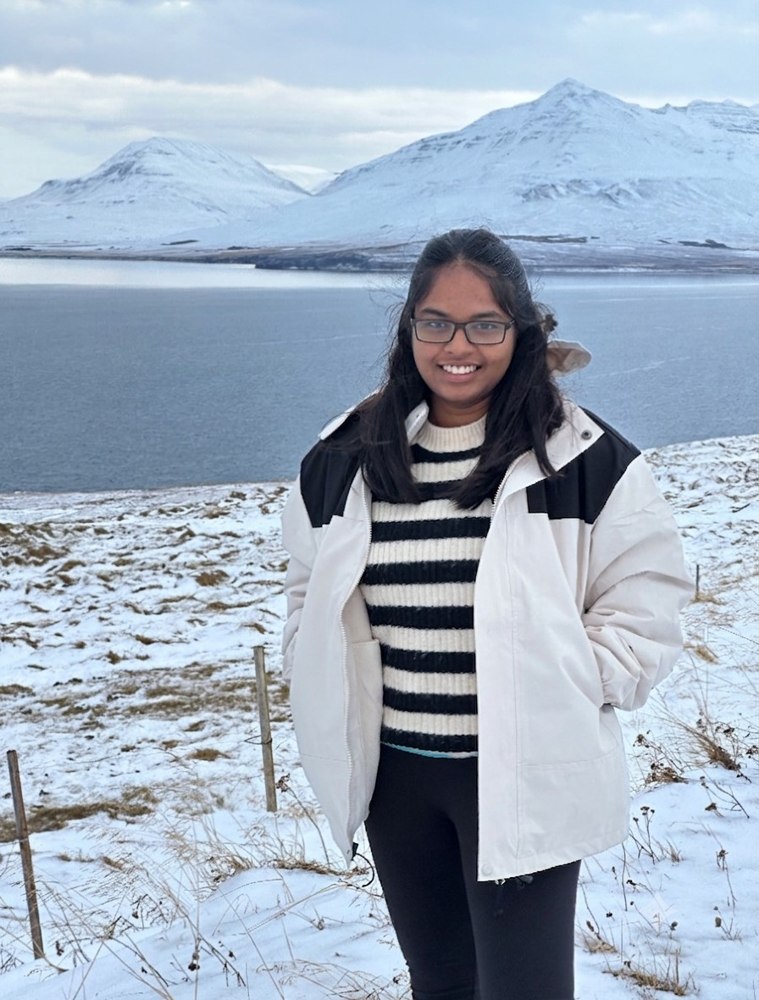

Research intern
University of Vienna, Prof. Philip Walther’s group
Inverse modeling of thermal crosstalk in photonic integrated circuits.
I turn indirect, incomplete signals into reliable estimates. That has meant pulling diagnoses out of free-text radiology reports, structured fields out of hospital bills, and device parameters out of photonic chip measurements.
I studied physics at IISc Bangalore and the University of Innsbruck, then spent a year building ML systems at a healthcare startup, from first prototype to client demo.
I’m looking for ML roles in Europe, from research assistant and PhD positions to applied teams building real products. I finish my MSc in December 2026.

Using language models to generate training labels where expert annotation is scarce, and checking them against clinician-verified cases.
Turning scans, bills and reports into structured data, with model choices backed by head-to-head comparisons.
Recovering hidden parameters from hardware and spectral data, and closing the loop with feedback-driven optimizers.
A mix of ongoing research, industry projects and physics-lab work. The common thread is estimating something you can’t observe directly.
A weakly supervised pipeline for 12 knee findings. MedGemma-4B reads more than 4,400 multilingual radiology reports (9 languages) and returns a label, a confidence score and a verbatim evidence quote for each finding, so every label can be traced back to the text.
PyTorch, MedGemma, multi-label classification
Python, FastAPI, React, PostgreSQL, AWS GPU instances
Built a physics-based inverse model fitted to hardware measurements to estimate device-level crosstalk parameters, so that crosstalk can be compensated when programming the chip.
Python, numerical modeling, parameter estimation
Wrote a multi-stage, derivative-free coordinate descent optimizer that uses camera feedback to correct optical aberrations with a spatial light modulator. It improved imaging resolution by 10%.
Python, optimization, hardware control
Inverse modeling of thermal crosstalk in photonic integrated circuits.
Document extraction, claim review and an end-to-end client demo for hospital billing data.
Derivative-free optimization for optical aberration correction.
Coursework and lab projects in computational modeling and applied machine learning, plus experimental optics:
Research intern, Aug to Dec 2021: multi-Gaussian fits of emission spectra across 17 temperatures with nonlinear least squares, plus a workflow that reuses earlier fits as starting guesses.
Venture Creation Summer School, University of Vienna, Austria (participant)
Greenhorn Meeting 2024, University of Siegen, Germany: talk and poster
ICTP Workshop on Frontiers in Quantum Simulation and Machine Learning, Trieste, Italy (full scholarship)
If you’re hiring, supervising, or working on something related, I’d be glad to hear from you.